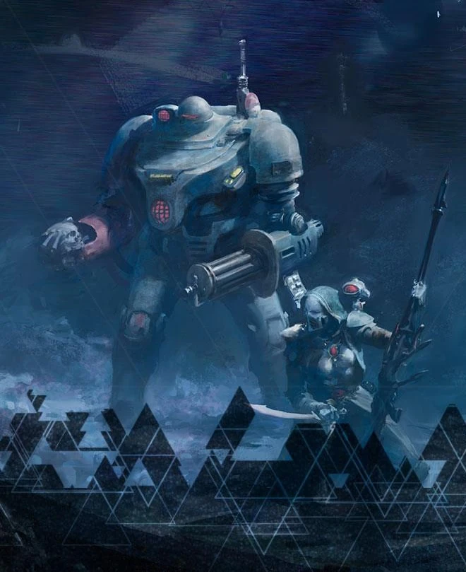
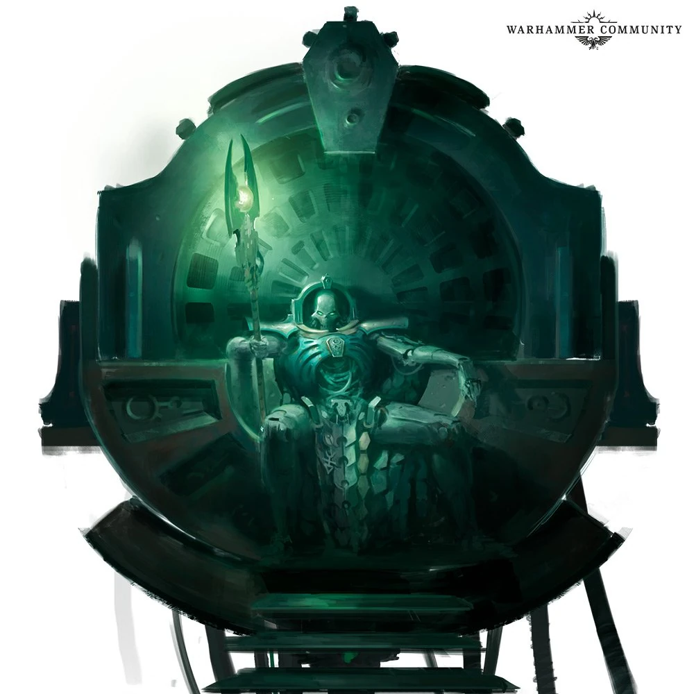
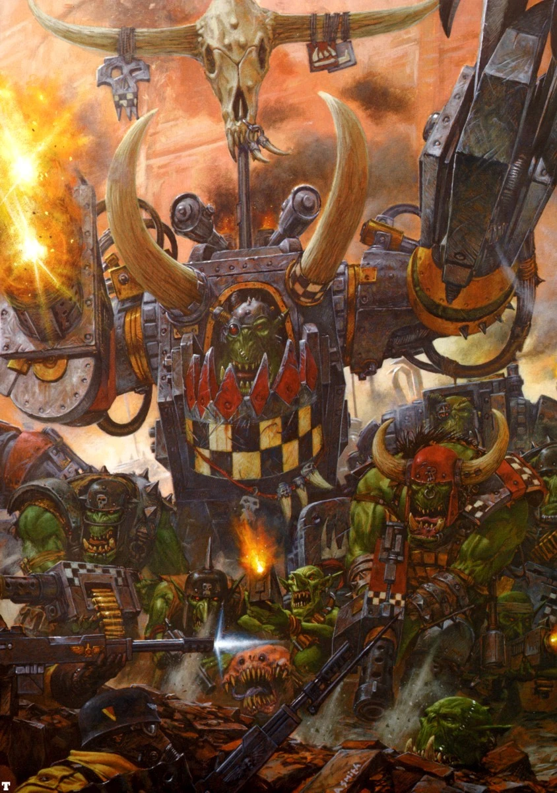
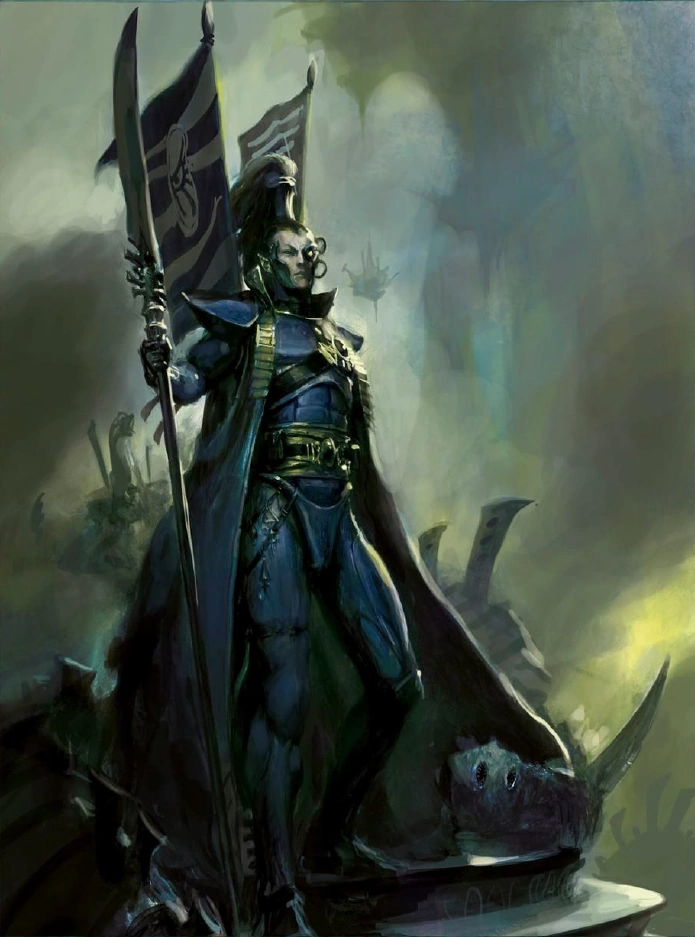
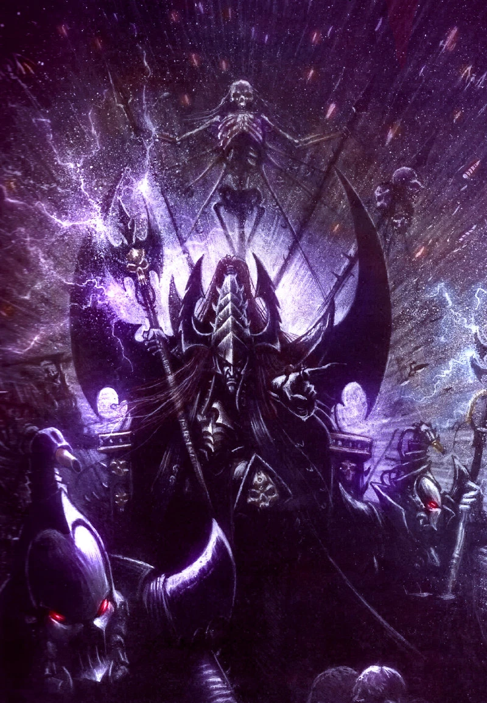
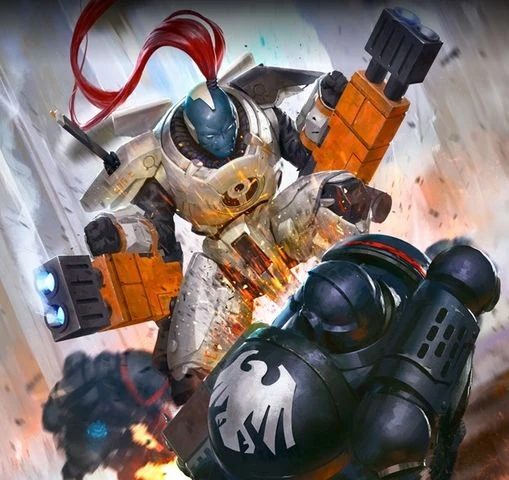
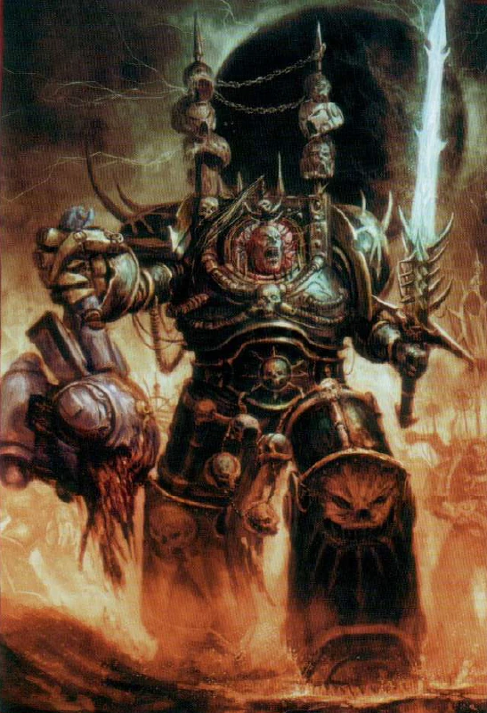

Про всесвіт загалом
Warhammer 40,000 зображує жорстоке та безнадійне бачення майбутнього, у якому людство, хоч і розкинулося на мільйонах світів, є лише тінню своєї колишньої величі. Звичайна людина в цьому всесвіті не має жодного значення, а її життя сповнене страждань і невігластва. Імперіум Людства існує лише завдяки подорожам через небезпечний вимір Варпу, де комунікація та транспортування товарів супроводжуються величезним ризиком. Навігація можлива завдяки Світлу Імператора — Астрономікону, який випромінює напівживий Бог-Імператор, що вшановується всією Імперією. Та попри це божественне керівництво, подорожі залишаються смертельно небезпечними — кораблі можуть зникати на віки, а деякі повертаються як Космічні Обломки, повні загроз і артефактів.
Імперіум стикається не лише з зовнішніми ворогами, а й з масштабними внутрішніми проблемами — релігійним фанатизмом, технологічним застоєм, корупцією та внутрішніми розколами. Хаос і раси ксеносів є загрозами апокаліптичного масштабу, кожна з яких прагне домінувати над галактикою. Боги Хаосу — руйнівні сутності Варпу — втручаються в долю людства протягом тисячоліть, тоді як ксеноси представлені низкою незалежних і часто смертельно небезпечних цивілізацій. Увесь цей світ сповнений жорстокості, конфліктів і відчаю, а виживання — це лише боротьба зі споконвічним занепадом.
Історія імперії
Весь всесвіт має багату і довгу історію. Хоча багато подій є міфами і легендами, занадто далекими для смертного з його короткою тривалістю життя, є три дуже складні періоди історії людства:
- Великий хрестовий похід і єресь Хоруса - початок Імперії, 31-е тисячоліття;
- Часи Кінця - темрява і повний застій, 41 тисячоліття;
- Темна Імперія - 42 тисячоліття, останні події та зміни в Імперії;

Початок (давні часи)
Кілька тисяч років до нашої ери група шаманів здійснює ритуальне самогубство, щоб переродитися як один надпотужний Імператор і захищати людство від Хаосу. Згодом Імператор впливає на розвиток людства — часом відкрито, а часом із тіні.
Зоряний Вихід (Ера Рицарів)
Людство освоює галактику завдяки надтехнологіям і психікам (псайкерам), які дозволяють безпечно подорожувати крізь Варп. Люди створюють роботів — "Залізних людей", та всю продукцію роблять за шаблонами STC. З'являються перші Імперські Рицарі.
Механіаклізм (бунт машин)
Через вплив Хаосу роботи повстають проти людства. Вибухає масштабна війна, яку люди виграють, але зазнають великих втрат. Технології втрачаються, людство розділяється і відкидається назад у розвитку.
Часи Боротьби (25 тис. рік)
Людство бореться за виживання, багато світів ізольовані, технології стають рідкісними артефактами. Елдари впадають у розпусту, що призводить до народження нового бога Хаосу — Слаанеша. З’являється Око Жаху — розрив у просторі, який приносить демонів і хаос.
Великий Хрестовий Похід (31 тис. рік)
Бурі у Варпі стихають, Імператор починає об’єднання людства. Він створює 20 Примархів, з яких походять Космодесантники — суперсолдати. Починається Великий Хрестовий Похід, мета якого — знову об'єднати людство в Імперію.
Єресь Хоруса
Найулюбленіший Примарх — Хорус — піддається впливу Хаосу, разом із іншими легіонами. Спалахує громадянська війна, яка ледь не знищує Імперію. Імператор перемагає Хоруса, але сам смертельно поранений і посаджений на Золотий Трон, який підтримує його існування.
Культ Імператора (36 тис. рік)
Імператора визнають богом, хоч він практично мертвий. Імперія тримається на вірі, а Інквізиція знищує всіх, хто знає надто багато про Хаос. Починається період релігійного фанатизму і деградації.
Апостазія та війни (36–40 тис. рік)
Спалахують численні війни, зрада серед правителів Землі. Імперія бореться за своє існування, зростає активність ксеносів — орків, тиранідів і Тау. Світло Імператора згасає, але людство тримається.
Темне Імперіум (41–42 тис. рік)
Абаддон починає 13-ту Чорну Хрестову Ходу. Виникає гігантський розлом — Цикатрикс Маледіктум, який ділить Імперію навпіл. Примарх Гілліман повертається до життя, створює нових Примарис-Маринів і веде Індомітус-Хрестовий Похід, намагаючись врятувати Імперію.
Вороги імперії
Тираніди

Вперше в історії Чумацького Шляху з'являються сили з інших галактик. Це Тираніди, що здаються передвісниками кінця. Вони поглинають все, поглинають цілі планети і розмножуються знову і знову. Як трубчасті черв'яки. Вони не використовують технології, вони - майстри еволюції та генної адаптації. Їх кількість незрівнянна з усіма расами разом узятими і помноженими на невідоме число. Якісно вони мають кращі юніти, ніж більшість інших фракцій, але з дуже малим руйнівним потенціалом, вони, здавалося б, пожирають багато планет, але в найважливіших конфліктах їх завжди перемагають, і проти них об'єднуються навіть вороги.
Некрони
Окрім цього, трохи раніше пробуджуються до життя древні машини, які 60 мільйонів років тому правили галактикою. Вони повстають, щоб повернути собі владу, а то й щось більше — душу і тіла. Це Некрони — супротивник з надзвичайно розвиненими технологіями, який часто просто надто могутній у порівнянні з іншими військами галактики. Колись давно вони були звичайними істотами, але продали душі заради безсмертя, ставши машинами — процес, який дехто з них тепер намагається скасувати. Теоретично їхнім правителем є Мовчазний Король, який повернувся до галактики після вигнання, щоб знову поставити свою расу на механічні ноги.
Орки
Є також Орки — дуже сильні та важкі для знищення прибульці. Збирачі металобрухту. Їхня технологія працює тому що... ну бо вони самі в це вірять — це так звана орковість / оркова енергія. Війна для них — це виключно розвага і спорт. Вони розмножуються, як гриби після дощу — буквально, бо вони й є гриби. Є також види орків, які взагалі не знають технологій. Вони літають з планети на планету та влаштовують WAAAAGH! або по-простому: ЛААААА! Вони дуже поділені, не єдина сила, і часто воюють між собою просто для власного задоволення. Найбільше WAAAAGH! наразі веде Газгкулл Маг Урук Трака.
Елдари
Елдари — ті, хто на кораблях розміром з малі планети втік від занепаду своєї раси. Серед них є звичайні мешканці світокораблів, а також Вигнанці, які ще до падіння Елдарів вирішили відокремитися від решти своїх братів. Загадкові Арлекіни, які мешкають у Павутинному Шляху (іншому вимірі), служать Сміючомуся Богу — одному з небагатьох, хто пережив народження Слаанеша. Є також Відступники, які покинули світокорабель і блукають без цілі галактикою, та Втікачі, які, ну... втекли, і давно живуть на диких світах. Загалом Елдари — це раса псайкерів, які через сили Варпу можуть впливати на реальність. Щось типу магії, але це не магія. Дуже загадкова раса, що прагне втручатися у важливі події в галактиці, іноді рятуючи або знищуючи багато життів перед обличчям Хаосу тощо.
Темні Елдари
Темні Елдари — брати згаданих вище Елдарів, які також пережили падіння, але стали гедоністичними й зіпсованими емо. Це переважно пірати, що літають від планетки до планетки, збираючи рабів та цікавих ксеносів для вчинення дуже неприємних речей. Вони обожнюють політику, тобто встромлювання кинджалів одне одному в спину. У них немає псайкерів, їхні обладунки — це їхня шкіра та кістки, бо вони покладаються на спритність і мобільність, ще більше, ніж їхні кузени. Темні Елдари, хоч і темні, не поклоняються Богам Хаосу. Якщо й діють, то виключно зі страху перед Слаанеш.
Домініон Тау
А ще є молода, енергійно зростаюча та єдина раса, яка асимілює, а не винищує інші види — Домініон Тау. Вони воюють за Вище Благо, фактично є найменш злими з усіх рас. Їхні технології орієнтовані на маскування, мобільність і вогневу міць — щось схоже на сучасну армію. Вони використовують бойові костюми — людиноподібні машини, керовані пілотами. У ближньому бою — повні нулі. Окремою фракцією є т.зв. Анклави Фарсайта, створені ренегатом з Домініону. Варто пам’ятати, що Домініон і Анклави дуже маленькі й не мають значного впливу на ситуацію в галактиці, але швидко розширюються.
Хаос
І, звісно, одвічна темрява — Хаос. До нього входять його послідовники, переважно люди (але іноді й інші раси, як-от дуже рідко Орки чи окремі Елдари), а також безліч демонів та сил, що залишились ще з часів Єресі Гора. Вони дуже поділені, а їхній головний ватажок — Абаддон Споганювач. Справжні ж володарі цієї фракції — Темні Боги, що мешкають в іншому вимірі — Варпі, де існують лише емоції, почуття й душі, немає фізичних законів, а поняття часу взагалі зникло. Там незліченна кількість демонів, усе спотворене, час не існує тощо. Саме завдяки Варпу всі раси (окрім Некронів, які використовують іншу технологію) можуть літати швидше за світло. Існує чотири боги, потенційно п’ятий.
- Тзинч — відповідає за "магію" (псайкерство) і змови.
- Нургл — за хвороби та смерть.
- Кхорн — за кровопролиття.
- Слаанеш — за гедонізм, задоволення та сексуальні бажання.
- І Маліс (ймовірно не існує/не є канонічним) — вигнаний іншими богами бог безумства, дуже слабкий, його ніхто не любить і армії майже немає (один орден — Сини Маліса, через що і виникла чутка, ніби він існує — здебільшого це вигадка фанатів, знайомих із Warhammer Fantasy, хоч і не заперечена офіційно).
Сили Імперіуму
Усім цим загрозам у Темну Епоху Імперіуму доводиться протистояти... а його території все більше скорочуються. До складу сил Імперіуму входять:
- Імперська гвардія. Відомі як Молот Імператора, офіційно — Astra Militarum. Вони нічого не бояться. Це основні сили, що складаються зі звичайних людей, яких призивають до армії. Вони мають величезний машинний арсенал і тони боєприпасів. Озброєні лазганами — лазерними гвинтівками, які отримали прізвисько «ліхтарики» через свою потужність у порівнянні з іншими арміями. Їх сила в кількості, іноді — і в якості. Діляться на безліч полків, і до багатьох з них приєднані відомі Комісари — люди з титанічними яйцями, які можуть застрелити солдата, якщо той спробує порушити наказ, або просто для підтримання бойового духу.
- Нащадки Темпестус. Елітні командоси Імперіуму. Дуже релігійні, дуже елітні. Походять із закладів Schola Progenium.
- Officio Assassinorum. Убивці. Дуже смертоносні. Походять зі своїх храмів. Існує 6 типів, кожен спеціалізується на іншому виді смертоносного вбивства та виховує відповідних кілерів.
- Adeptus Astartes, Космічні Десантники. Обрані Імператора. Спадкоємці Примархів. Діляться на ордени. Люди в силових обладунках, майже настільки ж товстих, як танки Гвардії. Це генетично модифіковані суперсолдати, здатні виживати в будь-яких умовах. Мають у розпорядженні потужний арсенал — тож вони дуже, дуже сильні. Окрім них існують нові, ще потужніші Primaris Marines — ще більше вдосконалена версія, що розроблялася тисячі років, тому трохи спізнилася з дедлайном. Primaris перевершують своїх попередників у всьому і поступово їх замінюють, хоча багато «старих» десантників також удосконалюють до рівня Primaris.
- Adepta Sororitas, Сестри Битви. Фанатичні діви в струнких силових обладунках. Люблять багато молитися, багато спалювати єретиків — і великі калібри. Зброї, звісно. З'явилися під час кривавої Епохи Апостазії. Працюють на Еклезіархію, отже є збройним крилом Імперської Церкви. Серед них іноді трапляються Живі Святі — надзвичайно потужні героїні, втілення віри з майже чудесними здібностями, тісно пов’язаними з Варпом.
- Adeptus Mechanicus. Жрецтво Марса і їх збройне крило — Скітарії. Вони поклоняються Богу-Машині, Омніссії. Для них машини — святі. Вони добре знаються на технологіях, хоча не завжди настільки, щоб ремонтувати чи створювати супер-складні машини самостійно. Обожнюють замінювати органіку на механіку. Мають потужне обладнання й не зупиняться, навіть якщо доведеться вбивати своїх. Мають власний флот. Виробляють зброю для всіх фракцій і вирушають у хрестові походи за давніми STC (стандартизованими техношаблонами). До них входить Collegia Titanica — колосальні крокуючі машини, Титани, які можуть самі знищити цілі армії. Вони також керують Legio Cybernetica — це вже повністю машини та боти. Мають під своїм контролем кілька Домів Лицарів.
- Імперський флот. Космічні (частково й повітряні) сили Імперіуму. Величезні броньовані кораблі. Найбільші з них можуть знищити цілі планети одним пострілом — це називається Екстермінатус. Багато з кораблів мають кілька кілометрів у довжину й перевозять цілі армії.
- Екстермінатус. Багато кораблів, мають кілька кілометрів у довжину й перевозять цілі армії.
- Інквізиція. Таємні сили Імперіуму, що діють у тіні. Виконують спеціальні місії, змушують зникати людей або навіть цілі планети, якщо визнають це необхідним. Поділені на різні Ордо. Часто проводять дослідження. Їх не любить ніхто — навіть менше, ніж Механикус.
- Вільні Торговці. Люди, які за дозволом Імперіуму стали своєрідними благородними піратами. Попри імперську ксенофобію та ненависть до чужинців, ці персонажі, якщо треба, можуть навіть мати прибульців у своїй армії.
- Імперські Лицарі. Мають свої Доми, королів, баронів, герби тощо — усе майже як у середньовічному лицарстві. Але замість коней — 10-метрові бойові машини, здатні поодинці знищувати найпотужніші наземні сили інших рас.
- Adeptus Arbites. Імперська поліція. Їх якість не сильно залежить від планети, де вони знаходяться, на відміну від їхньої чисельності. Є майже на кожній імперській планеті. Їхнє спорядження краще, ніж у звичайної Гвардії (залежить від полку), але їхні підрозділи дрібніші й мають менше важкої техніки.
- PDF — Планетарні Сили Оборони. к правило — гірші версії полків Імперської Гвардії (хоча залежить від планети й її ресурсів). Це перша лінія захисту у разі вторгнення чужинців або Хаосу. Саме з них набирають новобранців до Гвардії в рамках так званої Імперської Десятини.